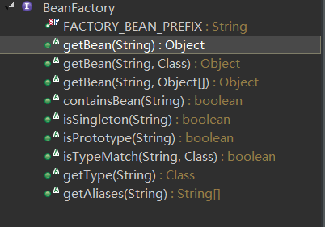

Bean 的配置方式(三种)：
通过全类名配置 Bean
1 | <!-- |
ApplicationContext
主要实现类：
- ClassPathXmlApplicationContext：从类路径下加载配置文件
- FileSystemXmlApplicationContext：从文件系统中国加载配置文件
从 IOC 容器中获取 Bean

最常用到：
利用 id 定位到 IOC 容器中的 bean:
HelloWorld helloworld = (HelloWorld) ctx.getBean("helloworld");
利用类型返回 IOC 容器中的 Bean，但要求 IOC 容器必须只能有以个该类型的 bean:
HelloWorld helloworld = ctx.getBean(HelloWorld.class);
Spring 支持的依赖注入的三种方式：
属性注入
1 | public void setName(String name) |
1 | <property name="name" value="Spring"></property> |
构造方法注入
例如，首先编写一个Car类,内含两个构造方法：1
2
3
4
5
6
7
8
9
10
11
12
13
14
15
16
17
18
19
20
21
22
23
24
25
26package com.luson.spring.beans;
public class Car
{
private String brand;
private String corp;
private double price;
private int maxSpeed;
public Car(String brand, String corp, double price)
{
super();
this.brand = brand;
this.corp = corp;
this.price = price;
}
public Car(String brand, String corp, int maxSpeed)
{
super();
this.brand = brand;
this.corp = corp;
this.maxSpeed = maxSpeed;
}
}
然后配置bean1
2
3
4
5
6
7
8
9
10
11
12
13
14<!-- 通过构造方法来配置 bean 的属性 -->
<bean id="car" class="com.luson.spring.beans.Car">
<constructor-arg value="Audi" index="0"></constructor-arg>
<constructor-arg value="ShangHai" index="1"></constructor-arg>
<constructor-arg value="30000" type="double"></constructor-arg>
</bean>
<!-- 使用构造器注入属性值可以指定参数的位置和参数的类型，以区分重载的构造器。 -->
<!-- type属性用来标识参数的类型，index属性选择参数的序号 -->
<bean id="car2" class="com.luson.spring.beans.Car">
<constructor-arg value="Baoma" type="java.lang.String"></constructor-arg>
<constructor-arg value="ShangHai" type="java.lang.String"></constructor-arg>
<constructor-arg value="240" type="int"></constructor-arg>
</bean>
最后，main方法里获取 bean 实例1
2Car car = (Car) ctx.getBean("car");
car = (Car) ctx.getBean("car2");
注入属性值细节
<![CDATA[]]> 包裹起来1 | <constructor-arg type="java.lang.String"> |
法1：通过<ref>元素或ref属性1
2
3
4
5
6<bean id="person" class="com.luson.spring.beans.Person">
<property name="name" value="Tom"></property>
<property name="age" value="24"></property>
<property name="car" ref="car2"></property>
<!--ref属性的值即为引用的bean的id的值-->
</bean>
或1
2
3
4
5<bean id="person" class="com.luson.spring.beans.Person">
<constructor-arg value="Tom"></constructor-arg>
<constructor-arg value="25"></constructor-arg>
<constructer-arg ref="car"></constructer-arg>
</bean>
法2：使用内部 bean1
2
3
4
5
6
7
8
9
10
11
12<bean id="person" class="com.luson.spring.beans.Person">
<property name="name" value="Tom"></property>
<property name="age" value="24"></property>
<!--内部bean，不能被外部引用，id 有没有都一样 -->
<property name="car">
<bean id="car3" class="com.luson.spring.beans.Car">
<constructor-arg value="Ford"></constructor-arg>
<constructor-arg value="Changan"></constructor-arg>
<constructer-arg value="200000" type="double"></constructer-arg>
</bean>
</property>
</bean>
级联属性
1 | <constructor-arg ref="car"></constructor-arg> |
集合属性
1 | <!-- 一、使用 list 节点为 List 类型的属性赋值--> |
1 | <!-- 二、配置 Map 属性值 --> |
1 | <!-- 三、配置 properties 属性值 --> |
1 | <!-- 配置单例的集合 bean，以供多个 bean 进行引用，需要导入 util 命名空间 --> |
1 | <!-- 通过 p 命名空间为 bean 的属性赋值，需要先导入 p 命名空间 --> |
bean 的自动装配（不推荐使用）
<bean id="address" class="com.luson.spring.beans.Address"
p:city="Beijing" p:street="HuiLongGuan"></bean>
<bean id="car" class="com.luson.spring.beans.Car"
p:brand="Audi" p:price="300000"></bean>
<!-- 没有用自动装配引用 bean：-->
<bean id="person" class="com.luson.spring.beans.Person"
p:name="Tom" p:address-ref="address" p:car-ref="car"></bean>
<!-- 采用 autowire 进行自动装配：有 byname 和 bytype 两种方法 -->
<!-- 1、byname 根据 bean 的 id 和当前 bean 的 setter 的属性名进行装配，相同则自动装配，不同则为 null -->
<bean id="person" class="com.luson.spring.beans.Person"
p:name="Tom" autowire="byName"></bean>
<!-- 2、byType 根据 bean 的类型和当前 bean 的属性的类型进行自动装配，但要求只有唯一相同类型的 bean，否则会出错 -->
<bean id="person" class="com.luson.spring.beans.Person"
p:name="Tom" autowire="byType"></bean>